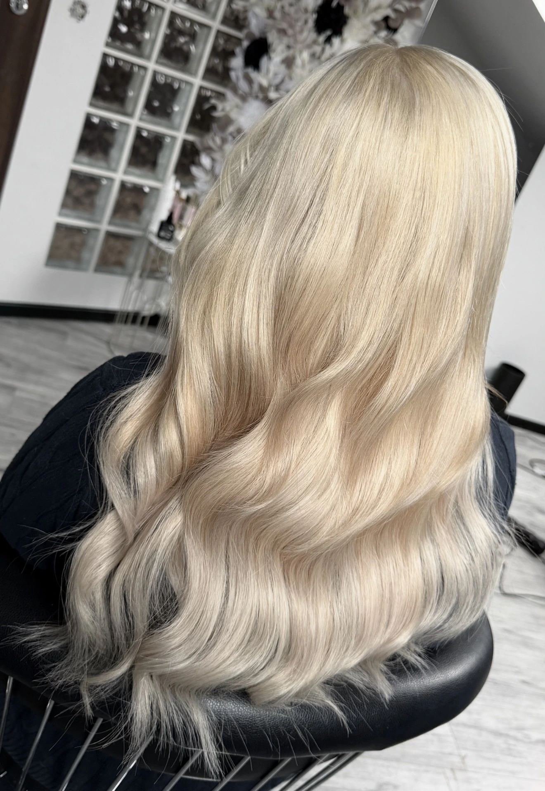
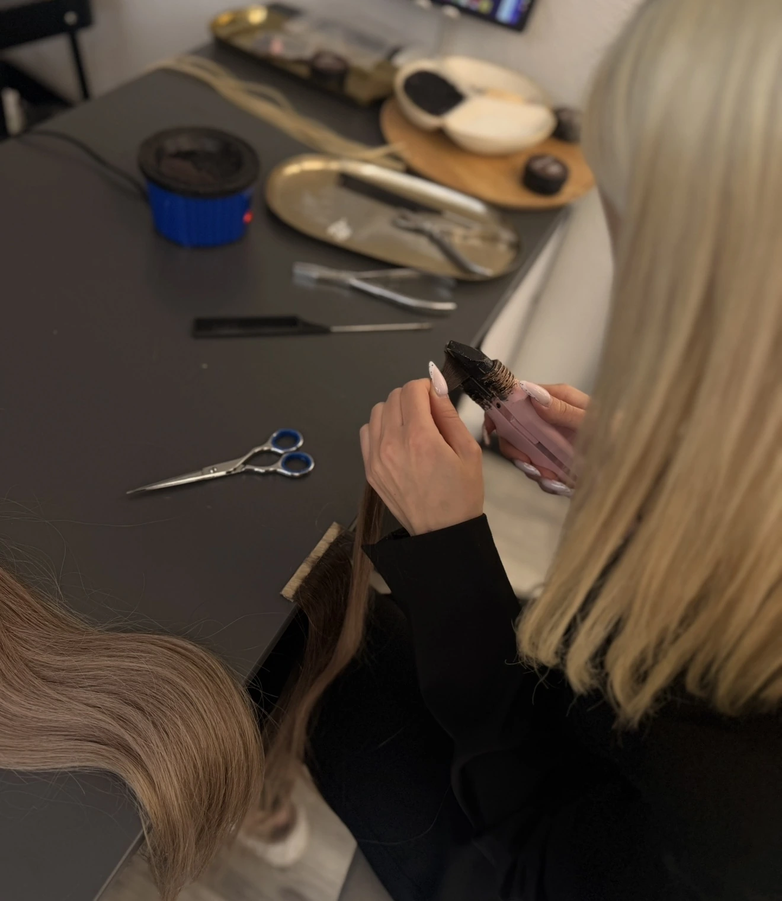
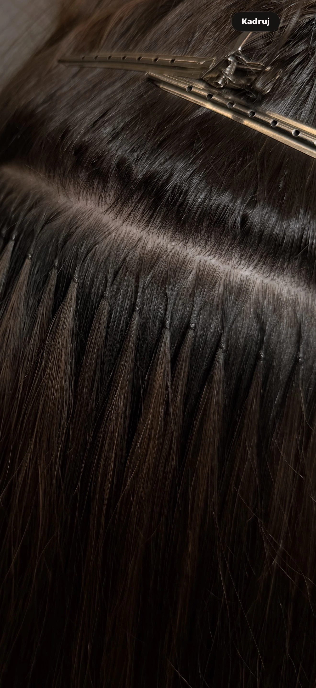
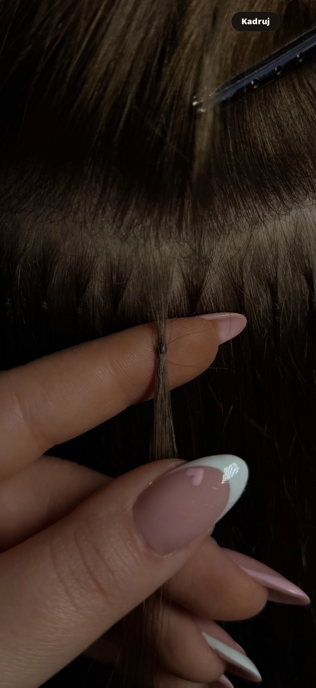
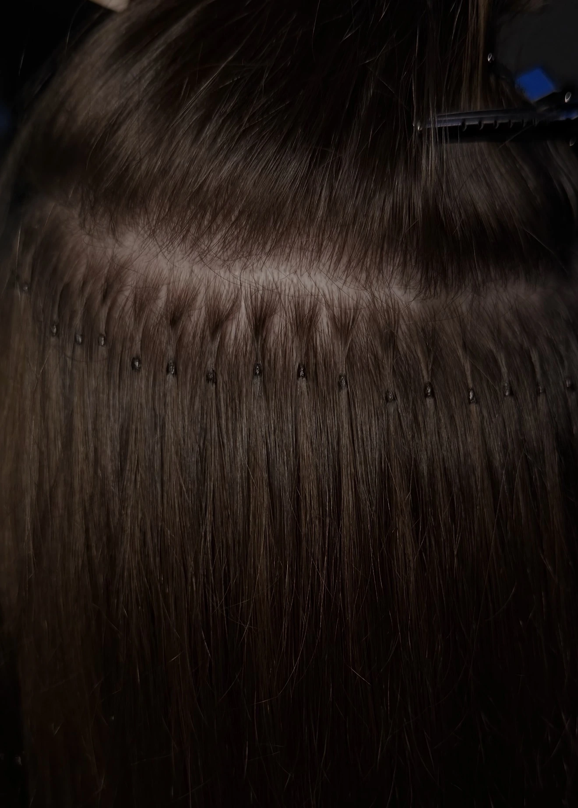
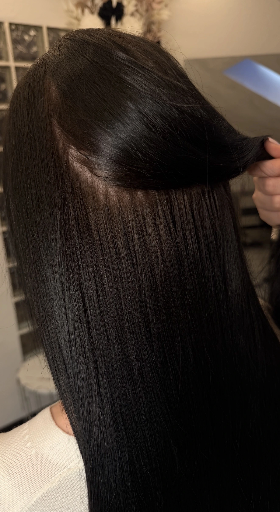

Koloryzowanie włosów przedłużanych
Kompleksowe szkolenie z pracy na włosach przedłużanych. Nauczysz się wykonywania odrostu, tonowania oraz neutralizacji niechcianych odcieni bez uszkadzania włosów.
600 złNiedługo dostępne

Akademia HBS
Praktyczna wiedza i indywidualne podejście. W Wojkowicach lub z dojazdem do Twojego salonu w Polsce.
Wiedza. Praktyka. Piękniejsze możliwości.
Szkolenia online
Oferta w przygotowaniu. Szkolenia online będą dostępne wkrótce.

Kompleksowe szkolenie z pracy na włosach przedłużanych. Nauczysz się wykonywania odrostu, tonowania oraz neutralizacji niechcianych odcieni bez uszkadzania włosów.

Poznaj techniki profesjonalnego mieszania kolorów włosów oraz przerabiania włosów na kartaczu, aby tworzyć naturalne blendy dopasowane do klientki.

Kompletne szkolenie online z najpopularniejszej metody przedłużania włosów. Krok po kroku nauczysz się wykonywania trwałych i estetycznych łączeń.

Rozbudowana wersja szkolenia online dla stylistek, które chcą wejść na wyższy poziom i poznać zaawansowane techniki pracy oraz rozwiązywanie problemów podczas aplikacji.

Szkolenie dla osób, które znają już podstawy i chcą udoskonalić technikę. Nauczysz się nanołączeń, metody koralikowej oraz dopracowywania aplikacji.
Szkolenia stacjonarne
Poznaj pełną ofertę i skontaktuj się w sprawie terminu.
Pasemka • Air Touch • Koloryzacja globalna
Nauczysz się koloryzacji, dzięki której przygotujesz włosy do przedłużania i zaoferujesz klientce pełną metamorfozę w jednym miejscu – od koloru aż po aplikację włosów.
Przygotowanie • Łączenia • Aplikacja • Korekta
Nauczysz się przedłużania włosów metodą keratynową – od przygotowania pasm i tworzenia estetycznych łączeń aż po prawidłową aplikację i korektę włosów.
Szkolenie dla stylistek, które chcą wejść na wyższy poziom. Poznasz metodę ukrytą i koralikową krok po kroku, pracę przy cienkich włosach, rozmieszczenie łączeń oraz sposoby na maksymalnie naturalny efekt.
Aplikacja • Rozmieszczenie • Korekta
Nauczysz się przedłużania włosów metodą kanapkową, dzięki której wykonasz szybką i estetyczną aplikację oraz nauczysz się prawidłowego rozmieszczenia i korekty włosów.
Kompleksowe szkolenie obejmujące aplikację Bio Taśm oraz ich samodzielne wykonywanie od podstaw. Cena 3500 zł dotyczy wykonywania podstawowych bio taśm oraz taśm z porostem włosów.
Rozbudowane szkolenie keratynowe: wielkości łączeń Nano, Micro i Mini, mieszanie włosów na kartaczu, koloryzacja odrostu przy włosach przedłużanych oraz łączenia koralikowe i ukryte.
Poznaj zakres szkolenia z małych łączeń →